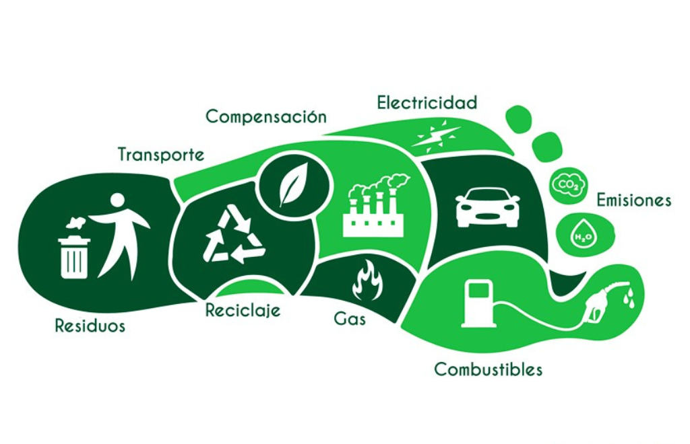

¿Qué es la huella de carbono?
La huella de carbono de una persona es la suma de los gases de efecto invernadero emitidos de forma directa o indirecta, expresada en unidades de masa dióxido de carbono.

Huella de carbono media en el planeta
Busca la huella de carbono anual por habitante en el mundo entero, expresada en toneladas de CO2. ¿Es igual en todos los países o hay diferencias entre países?
¿Cuánto CO2 generan las acciones cotidianas?
Consulta en internet cuántos gramos o kilogramos de CO2 generan algunas acciones cotidianas como ducharse, bañarse, lavarse las manos, fabricar un smartphone, uso de un smartphone durante un año, fabricar un coche, un viaje en coche de 100 km, o algunas otras acciones que se te ocurran.